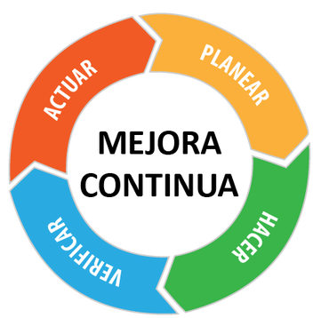

Definición
La mejora continua, también conocida como proceso de mejora continua (PMC) o gestión de la mejora continua (GCM), se define como un esfuerzo sistemático y permanente para mejorar productos, servicios o procesos dentro de una organización. Su objetivo principal es introducir pequeños cambios positivos de manera progresiva, que en conjunto generen mejoras significativas en la eficiencia, calidad y desempeño general.
Descripción del video
La empresa debe identificar cuál es su verdadera meta: generar valor sostenible, cumplir con los plazos de entrega y aumentar la rentabilidad, más allá de métricas aisladas como eficiencia de máquinas o volumen de producción. El video enfatiza que la mejora continua no depende solo de tecnología, sino de la colaboración entre áreas, comunicación clara y liderazgo que motive a cuestionar procesos establecidos.

Problema de cumplimiento de pedidos
Los pedidos no llegaban a tiempo al cliente porque ciertas máquinas o procesos se convertían en limitantes, se producían piezas que no podían avanzar al siguiente paso, generando exceso de inventario intermedio, cada área buscaba maximizar su propia eficiencia, pero eso no garantizaba que el flujo global cumpliera con los plazos de entrega, los retrasos afectaban la satisfacción del cliente y reducían la competitividad de la empresa. En pocas palabras, el incumplimiento de pedidos se debía a que la organización estaba enfocada en métricas locales (como mantener todas las máquinas ocupadas) en lugar de optimizar el flujo completo hacia la meta: entregar a tiempo y con calidad.